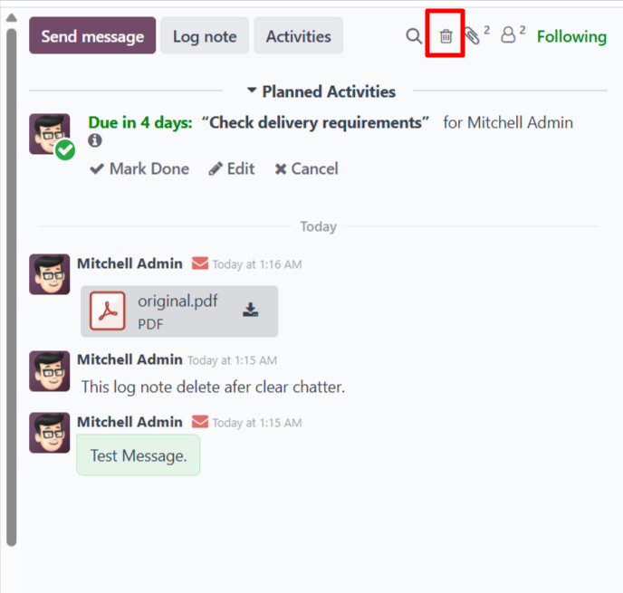
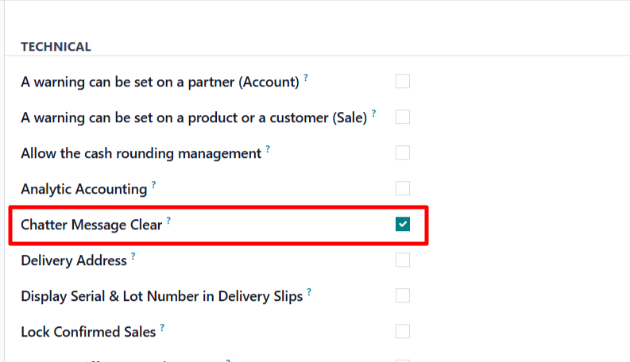
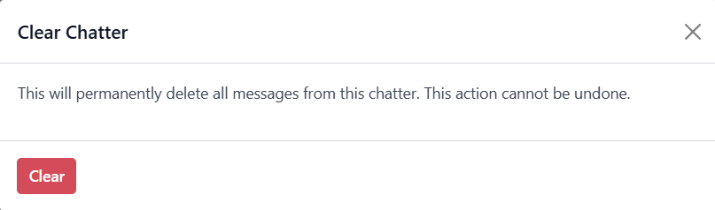
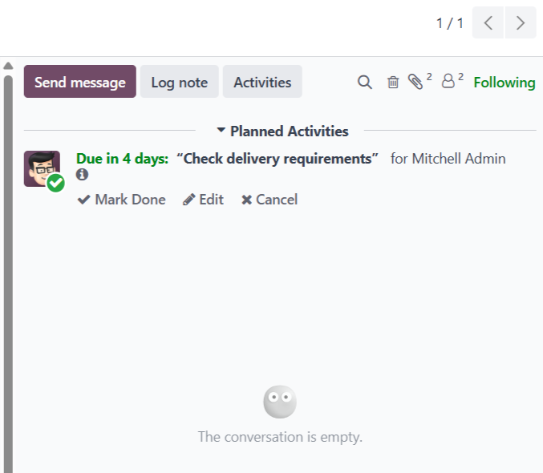

Delete all chatter messages from the current record using a clean trash icon, a confirmation dialog, and controlled group-based access.

Standard Odoo chatter is useful for collaboration, but some businesses need a controlled and safe way to clean message history from a specific document. This module adds that feature without exposing it to every user.
Focused functionality, clean user experience, and clear security boundaries.
Adds a dedicated trash icon in the chatter top bar.
Warns the user before deleting chatter messages.
Only users in the dedicated group can access the action.
Bulk chatter cleanup is intentionally restricted and validated in both the user interface and the backend method.



Messages linked to the current
record
Attachments & Activities from the
cleanup query
Customer Replies from the cleanup
query
No. Only users assigned to the Chatter Message Clear group can use the action.
Yes. The module shows a confirmation dialog before deleting chatter messages.
It is designed for standard backend form views using
chatter on mail.thread-enabled models.
Need customization, support, or implementation help for this module? Contact us for installation assistance, feature enhancements, issue resolution, and module-specific development.
Email: technostellar03@gmail.com